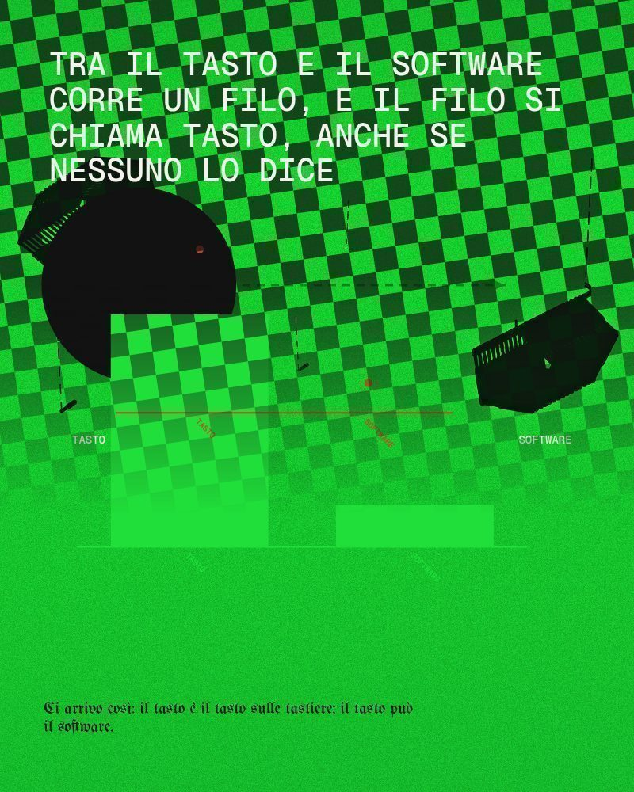

Tra il tasto e il software corre un filo

1/4 · Tra il tasto e il software corre un filo

2/4 · Il tasto è il tasto sulle tastiere
Il tasto e il tasto si somigliano più di quanto pensavo. (Tasto Windows)

3/4 · Il tasto può il software
Due nomi per quasi la stessa cosa. (Tasto Windows)

4/4 · Tra il tasto e il software corre un filo, e il filo si chiama tasto, anche se nessuno lo dice
Ci arrivo così: il tasto è il tasto sulle tastiere; il tasto può il software.
a conti fatti, tra il tasto e il software corre un filo, e il filo si chiama tasto, anche se nessuno lo dice
da dove viene il software?